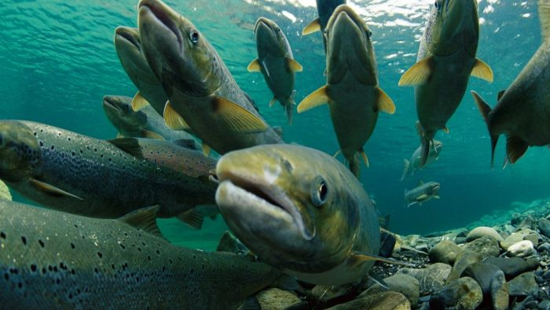
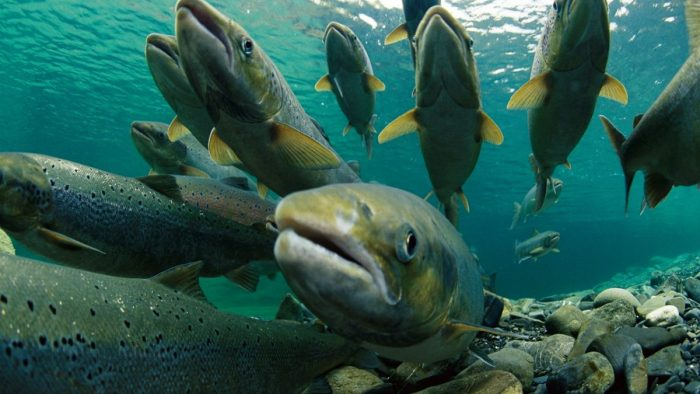

¡Bienvenido al Mundo de los Peces!
Los peces son una asombrosa variedad de criaturas acuáticas que habitan en una amplia gama de ecosistemas marinos y de agua dulce en todo el mundo. Con una diversidad impresionante de especies, desde los diminutos peces de arroyo hasta los enormes tiburones y ballenas, estos seres acuáticos son fundamentales para el equilibrio de los ecosistemas acuáticos.
La variedad de peces es verdaderamente fascinante, con adaptaciones únicas que les permiten sobrevivir en entornos que van desde las profundidades abisales del océano hasta los tranquilos arroyos de montaña. Desde los peces más comunes que se encuentran en acuarios hasta las especies más exóticas que habitan en arrecifes de coral, cada uno tiene su propio papel vital en el ecosistema acuático.
Al igual que en cualquier parte del mundo, Chile también alberga una rica diversidad de peces nativos, adaptados a los diversos hábitats acuáticos que se encuentran a lo largo de su extensa costa y en sus ríos y lagos. ¡Descubre la maravillosa variedad de peces chilenos y su papel en los ecosistemas acuáticos aquí!
.jpg) 
